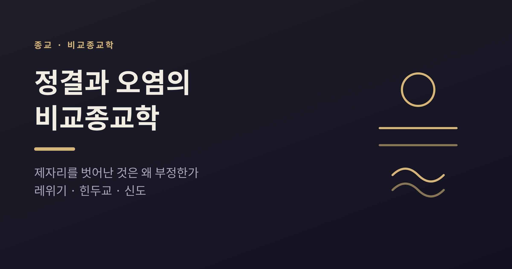
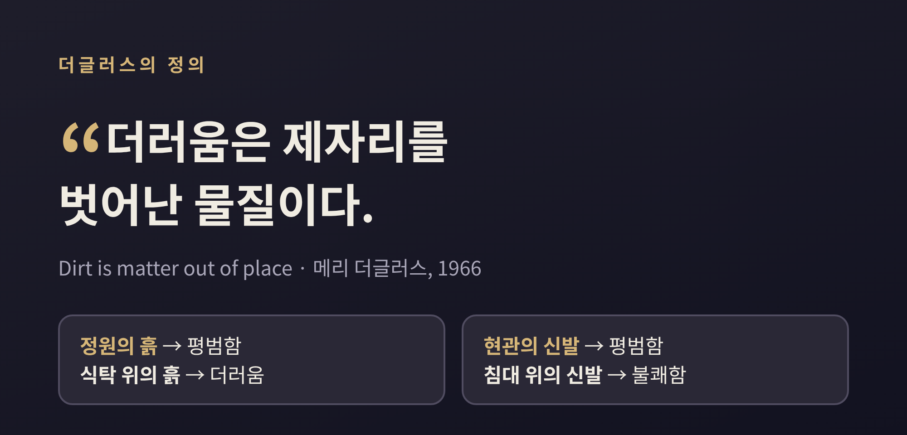
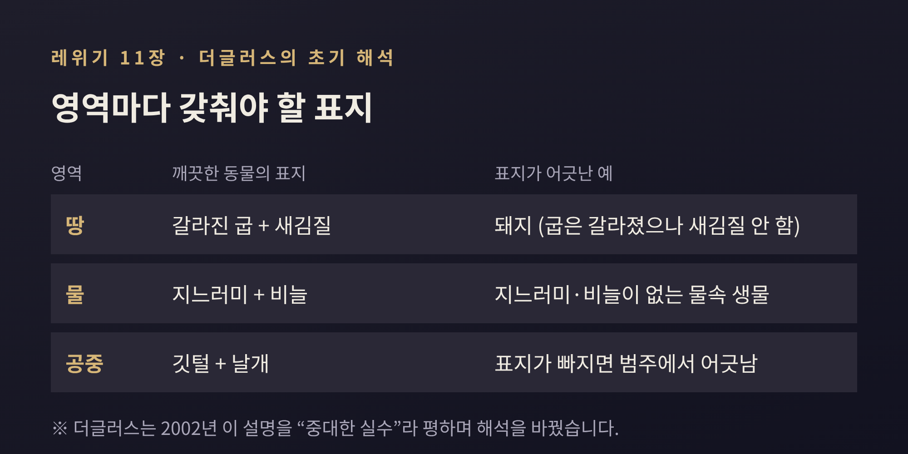
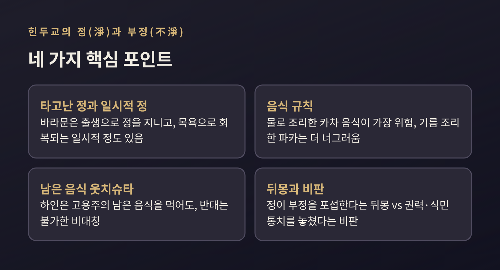
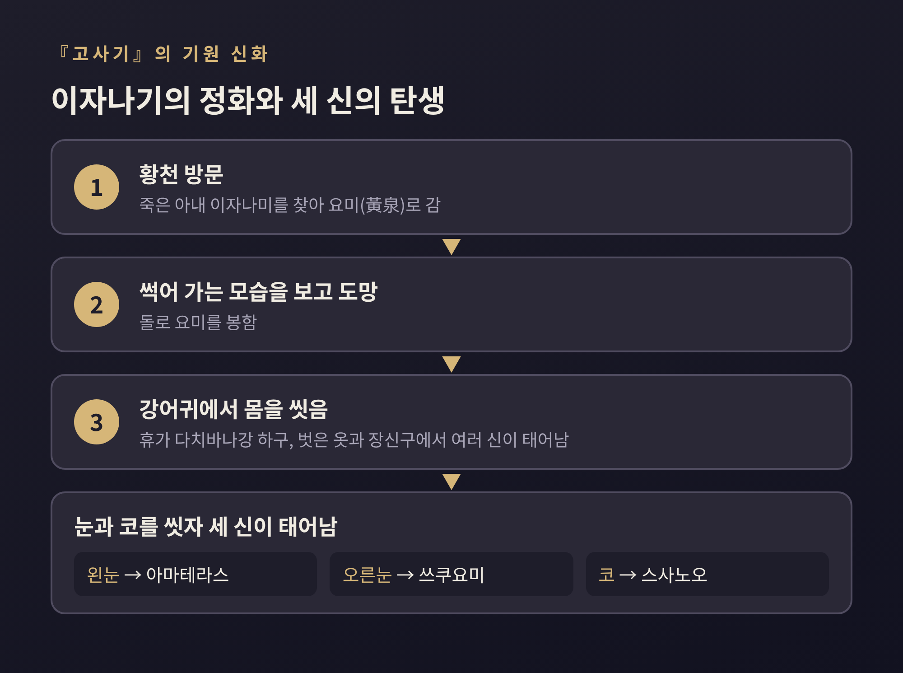
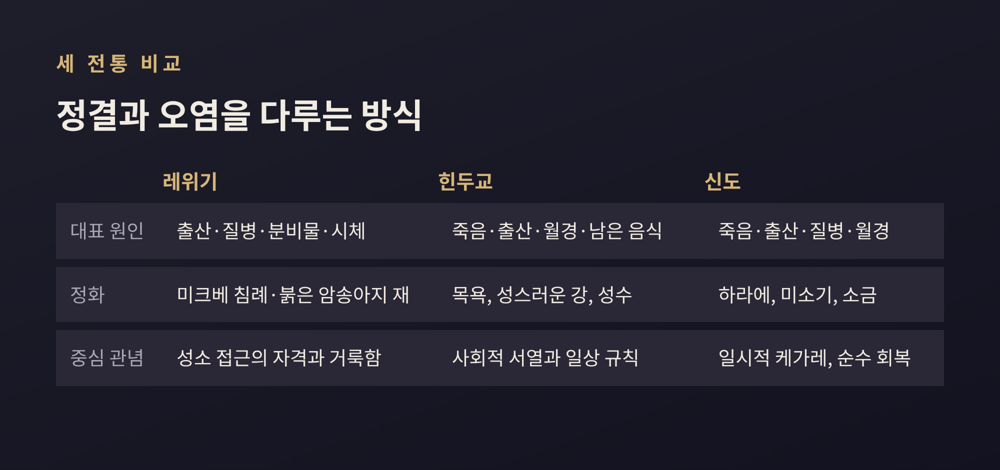

정결과 오염의 비교종교학, 레위기·힌두교·신도는 부정을 어떻게 다룰까

오늘은 정결과 오염이라는 관념을 비교종교학의 시선으로 살펴보려 합니다.
영국 인류학자 메리 더글러스의 『순수와 위험』이 던진 질문을 출발점으로, 레위기의 정결 규정, 힌두교의 정(淨)과 부정(不淨), 신도의 하라에와 미소기를 차례로 비교해 보겠습니다.
어느 신앙이 옳은지 가리는 글이 아닙니다. 사람들이 '깨끗함'을 어떻게 설계해 왔는지 들여다보는 글입니다.
세 줄 요약
- 더글러스는 더러움을 "제자리를 벗어난 물질"로 정의하며, 오염 관념을 질서와 분류의 문제로 읽었습니다.
- 레위기, 힌두교, 신도는 모두 정결을 중시하지만 부정의 원인, 해소법, 그것이 지니는 도덕적 무게가 서로 다릅니다.
- 더글러스의 해석은 지금도 유효한 통찰이자 논쟁의 대상이며, 위생설·상징설 등 여러 입장이 함께 놓여 있습니다.
더러움은 '제자리를 벗어난 것'이라는 정의
메리 더글러스의 『순수와 위험』은 1966년에 나왔습니다.
책의 핵심 문장은 짧습니다. 더러움은 "제자리를 벗어난 물질(matter out of place)"이라는 것입니다.
이 표현은 윌리엄 제임스에서 빌려 온 것으로 소개됩니다.
예를 들어 보겠습니다. 흙은 정원에서는 더럽지 않습니다. 식탁 위에 올라오면 더러워집니다.
신발은 현관에 있을 때는 평범하고, 침대 위에 있으면 불쾌해집니다.
물질 자체가 아니라 그 물질이 놓인 자리가 문제라는 뜻입니다.
더글러스는 여기서 한 걸음 더 나아갔습니다.
더러움을 피하는 일은 질서를 세우는 일이라고 본 것입니다.
사회는 세계를 범주로 나눕니다. 범주에 들어맞지 않는 모호한 것, 곧 변칙(anomaly)이 위협으로 느껴진다는 설명입니다.
이 책에는 또 하나의 중요한 주장이 있습니다.
기존 인류학자들은 이른바 '원시' 사회의 정결 금기를 낯설고 비합리적인 것으로 보았습니다.
더글러스는 반대로, 금기가 종교와 도덕의 중심에 있다고 보았습니다.
현대 사회의 위생 관념과 고대의 정결 관념이 같은 뿌리의 생각을 표현한다고도 말합니다.
그래서 이 책의 '위험'은 세균이 아닙니다.
부정한 것에 닿으면 사람과 공동체가 더럽혀지고, 규범을 어기면 나쁜 결과가 온다는 믿음을 가리킵니다.

레위기 11장: 땅·물·공중의 분류와 변칙
더글러스가 가장 공들여 분석한 본문이 레위기의 음식 규정입니다.
11장은 먹어도 되는 동물의 기준을 적어 둡니다.
땅의 짐승은 굽이 갈라지고 새김질을 해야 합니다. 물속 생물은 지느러미와 비늘이 있어야 합니다.
마지막 대목은 "나는 거룩하니 너희도 거룩하라"로 닫힙니다.
1966년 더글러스의 초기 해석은 이렇습니다.
깨끗한 동물은 자기 서식처에 맞는 이동 방식의 표지를 모두 갖춘 동물입니다.
물은 지느러미와 비늘, 공중은 깃털과 날개, 땅은 갈라진 굽과 새김질이 표지입니다.
돼지는 굽이 갈라졌지만 새김질을 하지 않습니다. 요건 하나가 빠져 범주에서 어긋납니다.
바위너구리, 토끼, 낙타도 같은 방식으로 설명되었습니다.
이 설명은 한동안 교과서처럼 읽혔습니다.
그런데 더글러스 본인이 이 해석을 고쳤다는 점은 덜 알려져 있습니다.
1975년 글에서는 초기 작업을 "너무 안이한 해결책"이라 평했습니다.
인간에게 보편적인 분류 성향이 있다는 가정도 틀렸다고 인정했습니다.
2002년 재간 서문에서는 초기 설명을 "중대한 실수"라 부르고, 음식 규정이 "몸과 제단을 서로 본뜬다"는 쪽으로 방향을 바꿨습니다.
이스라엘인이 먹을 수 있는 육지 동물은 제물로 바칠 수 있는 가축이고, 금지된 동물은 오히려 해쳐서는 안 되는 존재라는 주장입니다.

위생설과 상징설, 학자들은 어떻게 나뉘는가
레위기 음식법의 이유를 두고는 입장이 여럿입니다.
어느 하나를 정답으로 단정하지 않고 나란히 놓아 보겠습니다.
위생설. 12세기 철학자 마이모니데스는 음식법에 건강상의 이점이 따른다고 보았습니다.
1953년에는 데이비드 마흐트가 '부정한' 고기의 추출물이 식물 묘종의 성장을 더 억제했다고 보고했습니다.
다만 결과 해석은 논쟁적입니다. 구약학자 레스터 그래브는 위생설이 지금은 거의 기각되었고, 지중해 기후에서 '부정한' 동물이 본래 해롭다는 증거가 없다고 지적합니다.
상징·분류설. 더글러스의 초기 이론이 여기에 속합니다. 규정은 건강이 아니라 세계의 질서를 말한다는 입장입니다.
더글러스는 위생만으로 설명하는 접근을 '의료적 유물론'이라 불러 비판했습니다.
도덕·알레고리설. 기원전 1세기의 『아리스테아스 서간』과 19세기 랍비 삼손 라파엘 히르슈는 깨끗한 동물을 미덕에, 부정한 동물을 악덕에 견주었습니다.
윤리·생명 존중설. 야코브 밀그롬은 음식법이 생명에 대한 존중을 가르친다고 보았습니다.
정체성·경계설. 다이앤 샤론은 강한 이웃에 둘러싸인 작은 공동체가 안과 밖을 가르는 단단한 경계를 필요로 했다고 읽습니다.
순종·명령설. 일부 전통은 이 규정을 이유를 묻지 않고 따르는 계명으로 분류합니다.
이 가운데 어느 쪽이 맞는지는 이 글에서 판정하지 않겠습니다.
한 가지는 분명합니다. 하나의 본문이 이만큼 다른 방식으로 읽혀 왔다는 사실입니다.
레위기의 부정: 출산, 질병, 시체 그리고 도덕적 부정
음식만이 아닙니다. 레위기는 몸에서 비롯하는 부정도 자세히 다룹니다.
출산 후에는 아들이면 7일, 딸이면 14일 동안 부정합니다(레위 12장).
피부병, 비정상적인 분비물, 월경도 부정의 원인이 됩니다(레위 13~15장).
그 사람이 앉은 자리와 쓰던 그릇에 닿은 사람도 부정해집니다.
시체 접촉은 가장 무거운 부정으로 취급되었습니다.
붉은 암송아지의 재로 정화해야 했는데, 지금은 이 의식을 행할 수 없어 모든 사람이 이 부정을 지닌 것으로 간주된다고 설명됩니다.
부정한 채 성소에 들어서면 성소를 더럽히는 일로 여겨져 무거운 처벌 대상이 되었습니다.
여기서 눈여겨볼 점이 있습니다.
이 부정 중 상당수는 죄와 무관합니다. 출산도, 정상적인 부부 관계도 부정을 낳지만 금지되지 않았습니다.
더글러스가 말한 대로 부정은 생물학적 존재라면 누구에게나 예외 없이 찾아옵니다.
조너선 클라완스 같은 학자는 이 점에서 의례적 부정과 도덕적 부정을 구분합니다.
의례적 부정은 피할 수 없는 자연 과정에서 오고, 성소에 접근할 자격에만 영향을 줍니다.
도덕적 부정은 근친상간, 우상숭배, 살인 같은 죄에서 오며, 땅과 성소를 위협한다고 이해됩니다.
앞의 것은 씻어서 풀 수 있지만, 뒤의 것에는 의례적 해소 방법이 없다는 설명입니다.
힌두교: 정과 부정이 일상과 위계를 가르다
힌두교의 정(淨)과 부정(不淨)은 레위기와 닮은 점도, 다른 점도 있습니다.
먼저 비슷한 점입니다. 죽음을 다녀온 뒤에는 목욕을 합니다. 월경 후 4일이 지나면 머리를 감습니다.
출산 후 산모는 바르나에 따라 10일에서 30일까지 격리되는 관행이 있고, 아버지는 곧바로 목욕으로 정화할 수 있다고 소개됩니다.
갠지스 같은 성스러운 강에서의 목욕은 대표적인 정화 방법입니다.
다른 점은 부정이 곧바로 사회 서열과 이어진다는 데 있습니다.
힌두 사회에서는 높은 지위가 정(淨)과, 낮은 지위가 부정과 연결됩니다.
바라문 부모에게서 태어난 바라문은 타고난 순수를 지니고, 목욕으로 회복되는 일시적 순수도 있습니다.
청소부는 인분과 오물을 다루기에, 가죽 노동자와 도살업자는 죽은 동물과 살생을 다루기에 낮게 매겨졌습니다.
흥미롭게도 폭력과 관련된 크샤트리아는 정치 권력과 부 때문에 높은 자리를 지켰습니다.
음식 규칙은 이 서열을 일상으로 끌어옵니다.
낮은 카스트가 준 음식이나 물을 받으면 지위가 내려가지만, 높은 쪽에게서 받으면 그렇지 않습니다.
물로 조리한 카차 음식이 가장 위험하고, 기름으로 조리한 파카 음식은 조금 낮은 카스트의 것도 받을 수 있으며, 생음식은 누구에게나 받을 수 있다고 정리됩니다.
남이 먹다 남긴 음식(웃치슈타)도 부정으로 여겨집니다. 가까운 가족끼리는 나눠 먹지만, 하인은 고용주의 남은 음식을 먹어도 고용주는 하인의 것을 먹지 않는다는 비대칭이 나타납니다.
인류학자 루이 뒤몽은 『호모 히에라르키쿠스』(1966)에서 카스트를 정과 부정의 위계로 설명했습니다.
정(淨)이 부정을 '포섭'하고, 세속의 권력은 바라문의 종교적 권위 아래 놓인다는 구도입니다.
그러나 이 해석은 많은 비판을 받았습니다.
매리엇은 토지와 노동, 국가 권력 같은 현실이 밀려난다고 보았습니다.
버레먼은 이 그림이 꼭대기에 있는 이들의 시선을 반영한다고 지적했습니다.
닉 더크스는 왕이 바라문에게 종속된다는 구도가 상당 부분 식민 통치의 산물이라고 주장했습니다.
부정이 낮은 지위의 원인인지, 지배의 결과인지는 지금도 열린 질문입니다.

신도: 하라에와 미소기, 씻어내면 돌아오는 순수
신도에서 오염은 케가레(穢れ)라고 부릅니다.
죽음, 출산, 질병, 월경이 대표적인 원인입니다. 개인뿐 아니라 공동체에도 영향을 준다고 이해됩니다.
한 해설은 케가레가 도덕적 판단이나 죄와 같지 않으며, 비도덕적인 자연의 힘에 대한 반응이라고 설명합니다.
그렇다고 죄가 없는 것은 아닙니다. 쓰미(罪)라는 말은 본래 금기 위반이나 재앙, 케가레까지 아우르는 넓은 개념이었습니다.
10세기 『엔기시키』는 쓰미를 재산에 관한 아마쓰쓰미와 사람에 대한 구니쓰쓰미로 나눴습니다.
해법은 하라에(祓)입니다. 신도 의례에서 가장 먼저 놓이는 절차 중 하나로, 쓰미와 케가레를 제거합니다.
사제가 오누사나 하라에구시를 흔들기도 하고, 물과 소금을 쓰기도 합니다.
그중 물에 몸을 담그는 형태가 미소기(禊)입니다. 폭포나 흐르는 물, 바다에서 행합니다.
신사 입구에서 손과 입을 씻는 데미즈도 그 축소판으로 설명됩니다.
기원 신화가 인상적입니다.
『고사기』에서 이자나기는 죽은 아내 이자나미를 찾아 황천에 갔다가 썩어 가는 모습을 보고 도망칩니다.
돌아와서 강어귀에서 몸을 씻는데, 이때 벗어 던진 옷과 장신구에서 여러 신이 태어납니다.
왼눈을 씻자 아마테라스, 오른눈에서 쓰쿠요미, 코에서 스사노오가 태어났다고 전합니다.
오염을 씻어내는 행위가 새로운 생성으로 이어진다는 점이 특징적입니다.
공동체 차원의 의례는 오하라에(大祓)입니다.
음력 6월과 12월 말에 열려 한 해 동안 쌓인 쓰미와 케가레를 정화합니다.
낭송하는 축사는 나카토미 씨족이 읽었기에 '나카토미노 하라에'라고도 부릅니다.
오늘날에도 장례 후 소금을 뿌리거나, 상중이어서 신년 첫 참배를 거르는 관습이 남아 있습니다.
역사 해석도 한 가지로 정리되지 않습니다.
강한 죽음 금기가 초기 신앙에는 없었고, 불교가 죽음을 맡게 되면서 신도 의례에서 죽음을 떼어낼 수 있었다는 주장이 있습니다.
이 견해에 대한 반대 입장은 제가 확인한 자료에서는 확인하지 못했습니다. 다만 하나의 해석으로 소개해 둡니다.

세 전통을 나란히 놓으면 보이는 것
세 전통을 나란히 놓으면 공통점과 차이가 함께 보입니다.
공통점부터 보겠습니다. 모두 죽음, 출산, 피, 질병처럼 몸의 경계가 흔들리는 순간을 오염의 주요 원인으로 다룹니다.
모두 정화의 절차를 갖고 있고, 물이 중요한 매개입니다. 미크베, 갠지스의 목욕, 미소기가 그렇습니다.
차이도 뚜렷합니다.
레위기에서는 성소와 거룩함이 중심에 있습니다. 부정은 성소에 가까이 갈 수 있는지를 결정합니다.
힌두교에서는 부정이 사회적 서열, 음식과 접촉의 규칙에 깊이 스며 있습니다.
신도에서는 순수가 사람의 본래 상태이고, 케가레는 일시적이며 하라에로 되돌릴 수 있는 것으로 이해됩니다.

더글러스의 '제자리를 벗어난 것' 관념은 이 세 가지를 모두 설명하는 만능 열쇠는 아닙니다.
스스로 수정한 사례가 그 증거입니다.
그럼에도 오염이란 질서를 지키려는 사회의 언어일 수 있다는 착상은 여전히 쓸모가 있습니다.
무엇을 '더럽다'고 부르는지 보면, 그 사회가 무엇을 지키려 하는지가 드러나기 때문입니다.
정리하면 이렇습니다.
정결과 오염은 위생의 문제이기 이전에 한 공동체가 세계를 어떻게 나누고 지키는지를 보여주는 언어입니다.
"무엇이 더러운가를 물으면, 무엇을 지키려 하는가가 보인다."
우리 일상에도 남아 있는 소금과 손 씻기, 문턱 앞의 신발 정리를 돌아보게 됩니다.
다음에 그런 순간을 만난다면, 그 안에 어떤 질서의 감각이 들어 있는지 잠시 떠올려 보시면 좋겠습니다.